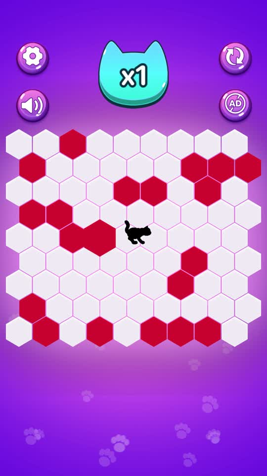
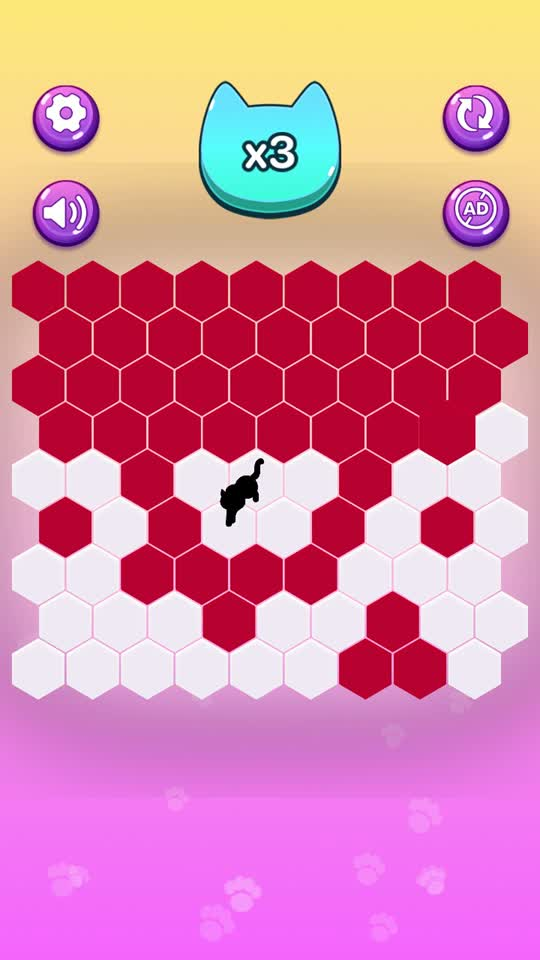
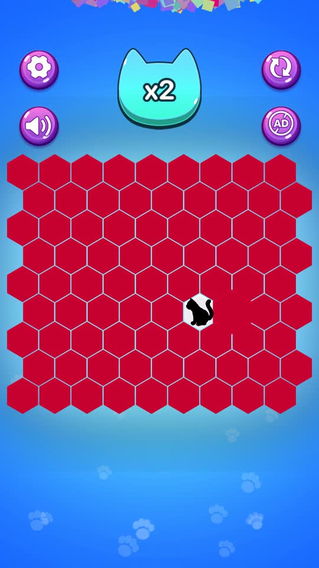

Nasıl oynanır?
- Dokunduğun altıgen dolar, kedi bir adım atar.
- Kedi kenara ulaşırsa kaçar; etrafını tamamen kapatırsan kazanırsın.
- Her galibiyette tahta boşalır ve kedi daha akıllı oynar.
Öne çıkanlar
- Tek dokunuşla oynanır, öğrenmesi saniyeler sürer.
- Her el yeni bir tahta ve yeni bir arka plan.
- Türkçe ve İngilizce dil desteği.
- İnternet bağlantısı gerekmez.